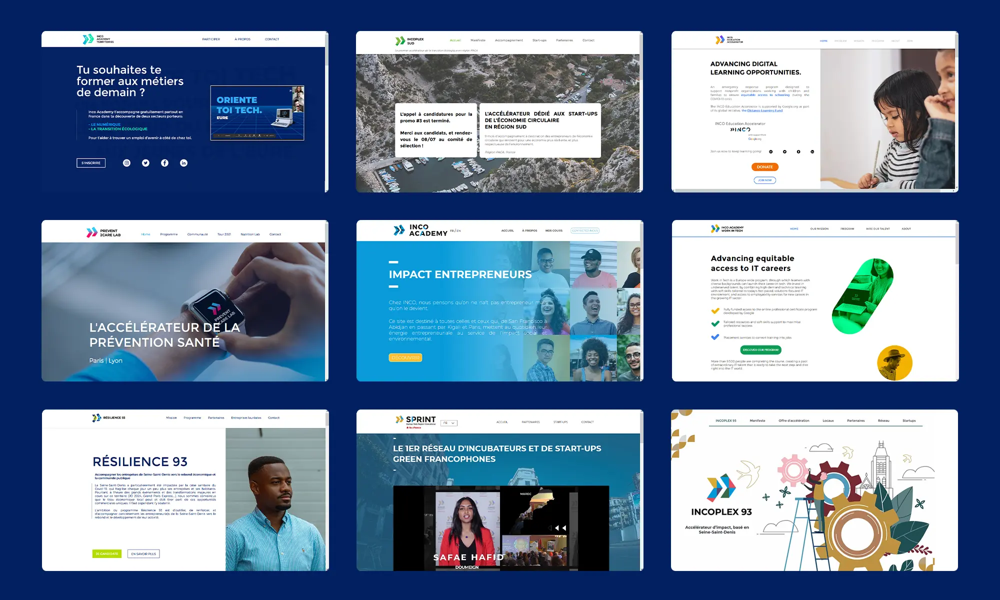

INCO
Brand Design
Fast Forward
INCO is a global organization that is building in 50 countries a new economy that is environmentally sustainable and socially responsible. INCO invests and supports innovative companies that are the future leaders of the economy. INCO provides training and support to those who wish to work in this new economy..
1st in-house designer
After working with freelancers for a long time, INCO decided to internalize the creative work: I joined and founded the Creative department in July 2019, with the aim of producing all types of creative content (website, visual identity, visual social networks, editing / video capture, layout), on an international scale and daily basis...
How to produce content for 50 countries every day?
For each program creation, such as incubation (INCO Incubators) or training (INCO Academy), my role was to create a visual identity, to adapt it to a website (on Wix) and to produce visuals and videos for our social networks. All while validating with the partner (public and/or private) who funded the project. Here is a summary of my missions:
• Organization of the revamping of the inco-group.co website (UI & Dev by papertiger.com)
• Creation of the visual identities of our programs (+30 logos)
• Design of the websites of our programs on Wix (+20 sites)
• Creation of visuals and videos in "snack-content" format for our social networks (every day)
• Video production / editing of our entrepreneurs & partners (+ 25 interviews across France)
Why did I leave INCO?
I have always been involved in startups and wanted to discover the agency / studio world. And above all, I wanted to learn creatively in a team of designers, with seniors to help me evolve.
Year
July 2019 - June 2021
Lire en Français 🇫🇷